Marine National Park Suitability Analysis — Ireland
Multi-criteria GIS suitability analysis to identify optimal locations for Ireland's first Marine National Park, integrating 13 inclusion and exclusion layers using weighted overlay and binary mask tools. Inclusion criteria covered biodiversity richness, heritage designations, population density, roads and schools; exclusion criteria included existing national parks, fishing zones, ferry routes, flood areas and underwater infrastructure. Site B on the west coast was recommended based on its 17 conservable habitats, low population density, and high heritage value.
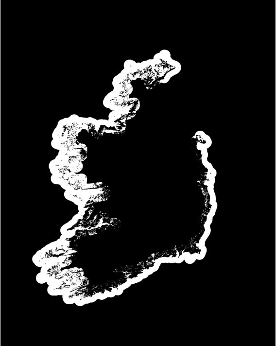
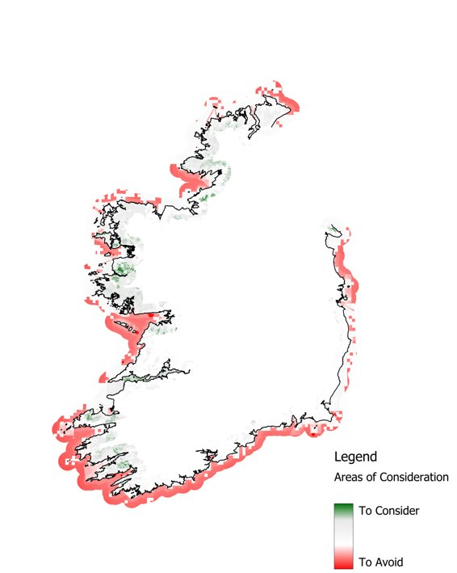
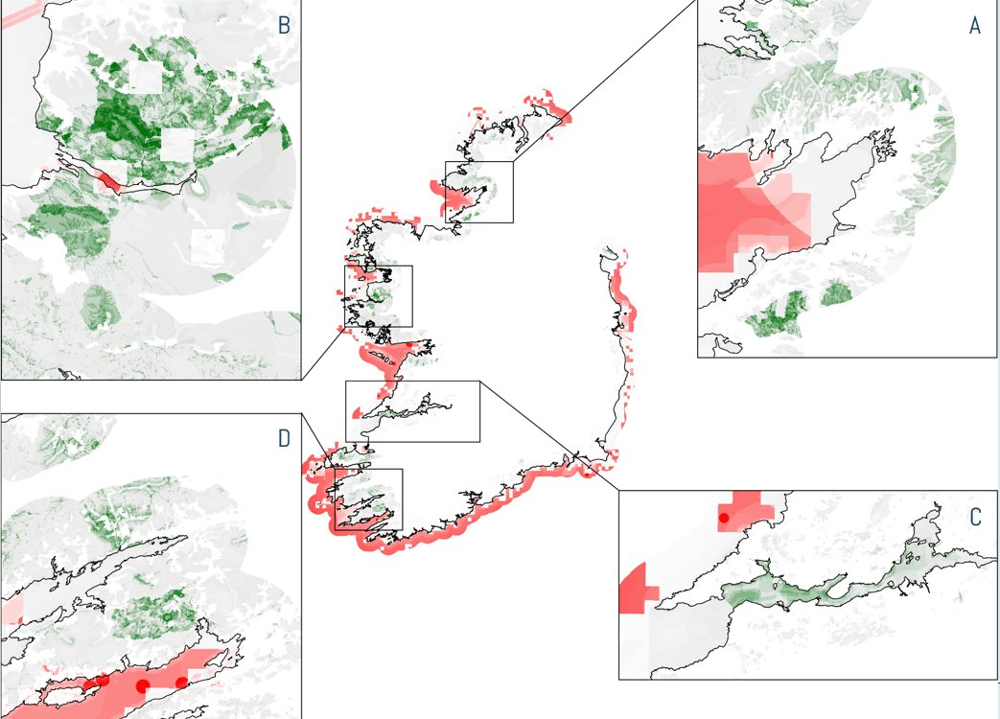
Los Angeles Wildfires — NDVI & Burn Severity Mapping
Remote sensing analysis of the January 2025 Los Angeles wildfires (Palisades and Eaton fires) using Sentinel-2 imagery processed in ENVI. Pre- and post-fire NDVI images (Jan 2nd vs Jan 12th) were compared to detect vegetation loss, while dNBR classification quantified burn severity across four fire zones. Results showed the majority of burned land experienced moderate severity (0.27–0.44), with extreme severity confined to higher elevation zones in the Santa Monica mountains. Total burned area calculated at ~37.7 km² across all severity classes.
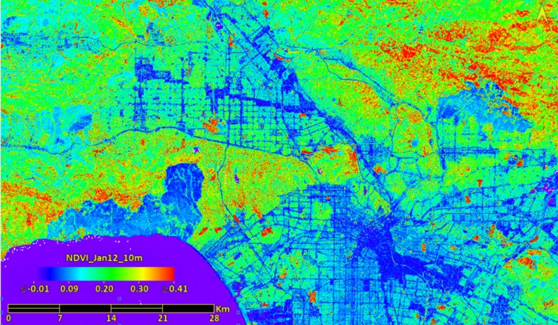
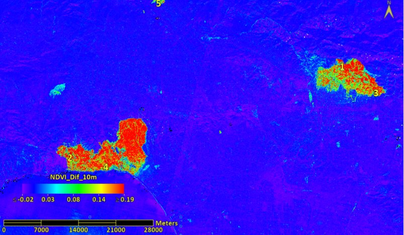
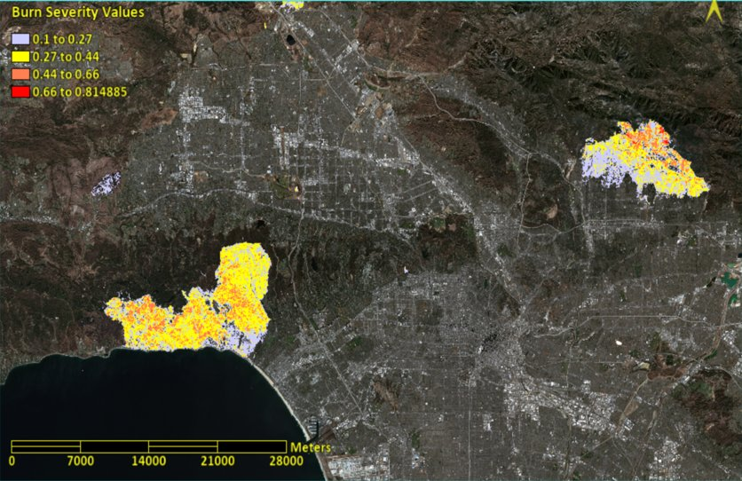
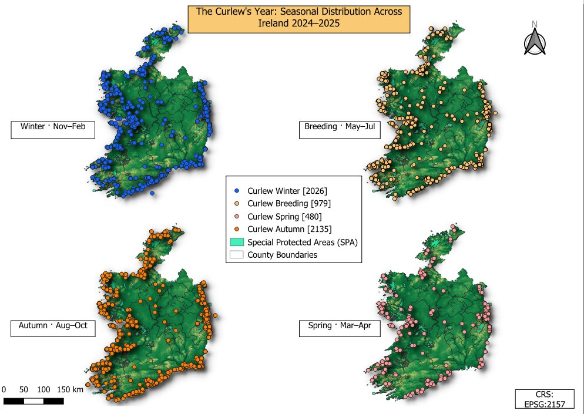
Curlew Seasonal Distribution — Ireland 2024–25
Four-panel small-multiples map of Curlew sightings across winter, breeding, spring and autumn seasons, overlaid with Special Protected Areas (SPAs).
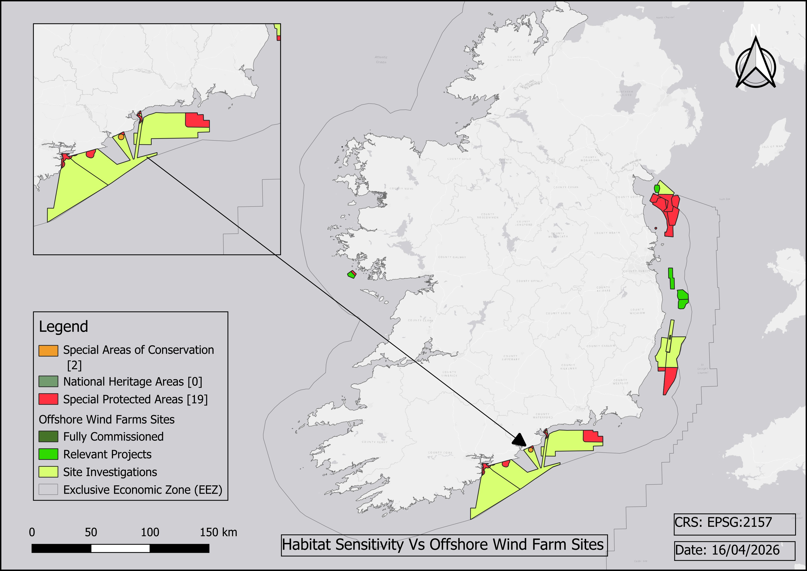
Habitat Sensitivity vs Offshore Wind Farm Sites
Overlay of protected habitats (SACs, SPAs) against offshore wind farm development sites within Ireland's Exclusive Economic Zone (EEZ).
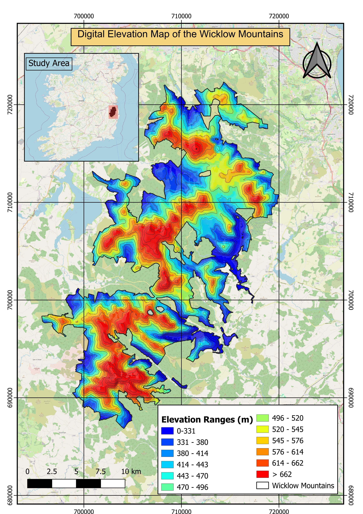
Digital Elevation Map — Wicklow Mountains
Raster terrain visualisation of the Wicklow Mountains using classified elevation ranges derived from DEM data, with a study area inset locator.
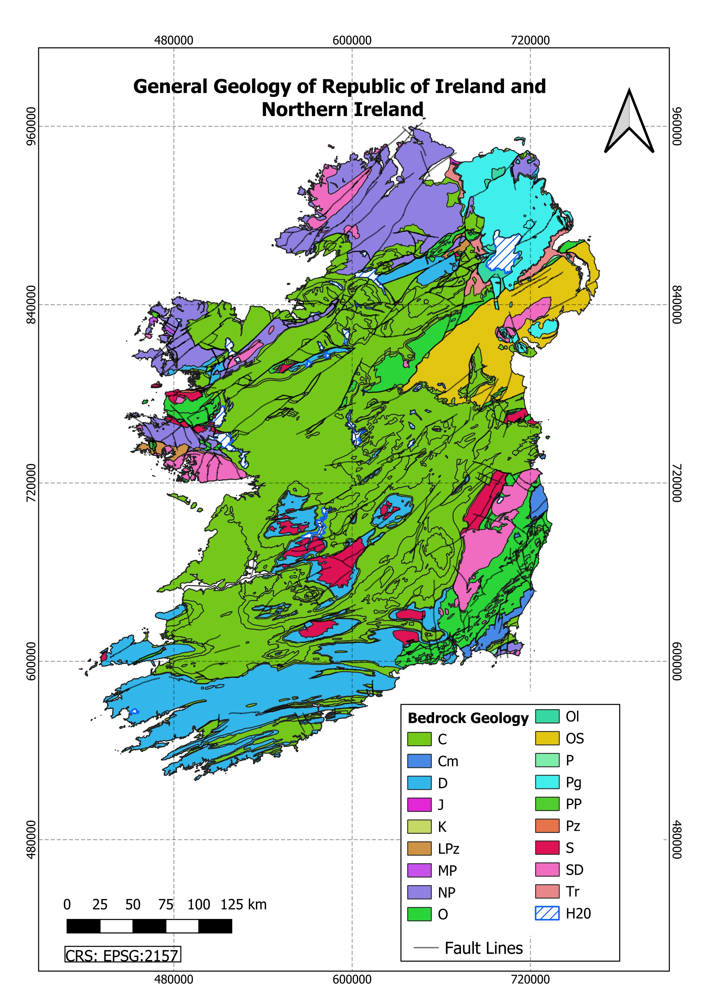
General Geology — Republic of Ireland & Northern Ireland
Bedrock geology classification mapping 20 geological categories from Carboniferous limestone to Precambrian basement, with fault lines overlaid.
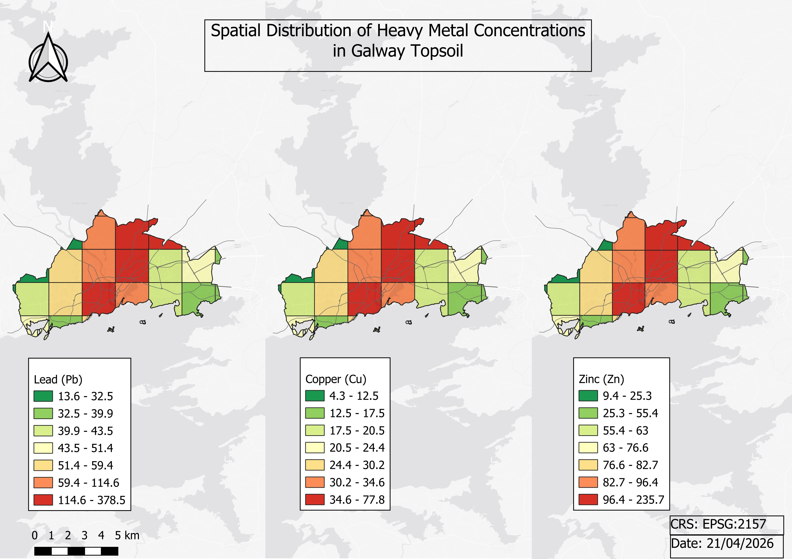
Heavy Metal Concentrations in Galway Topsoil
Spatial distribution of lead (Pb), copper (Cu) and zinc (Zn) across Galway City using a three-panel classified choropleth. CRS: EPSG:2157.
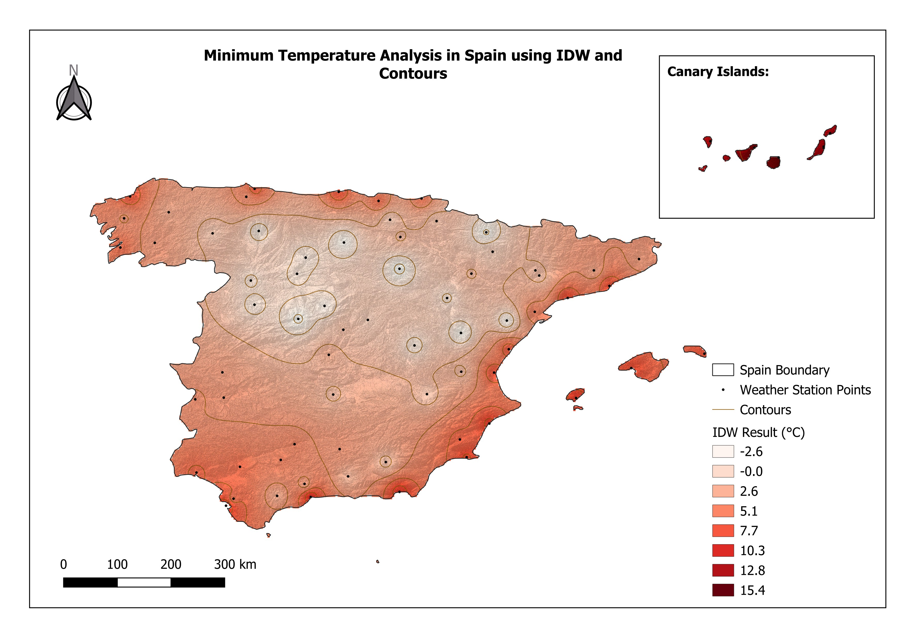
Minimum Temperature Analysis — Spain (IDW)
Inverse Distance Weighting interpolation of minimum temperatures across mainland Spain and the Canary Islands from weather station point data, with isotherm contours.
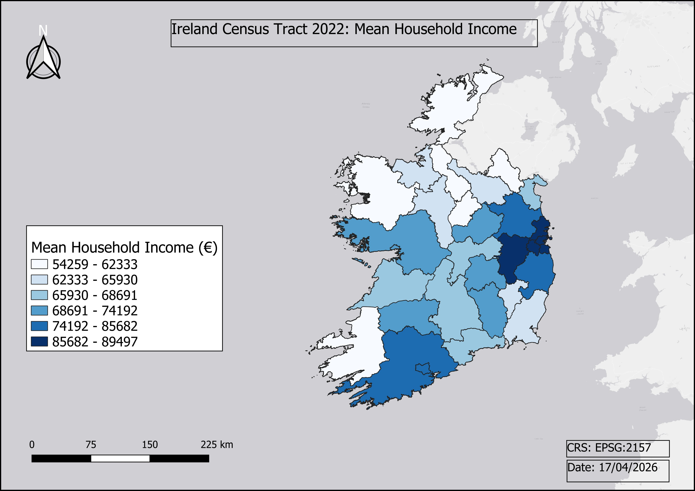
Mean Household Income — Ireland Census 2022
County-level choropleth of mean household income from the 2022 Irish Census, highlighting the east–west income gradient across the Republic.
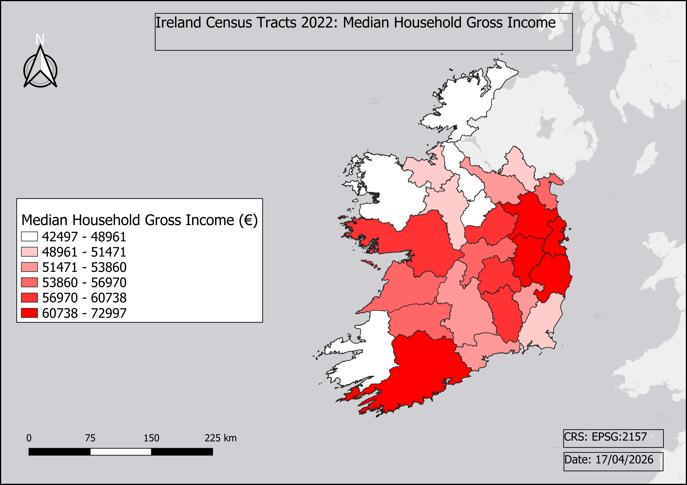
Median Household Gross Income — Ireland Census 2022
County-level choropleth of median gross household income, a complementary measure of income distribution to mean values across Ireland.